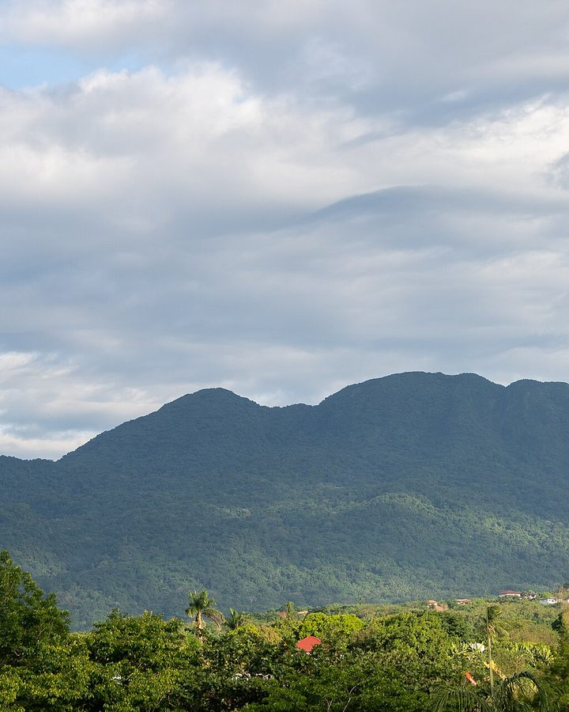
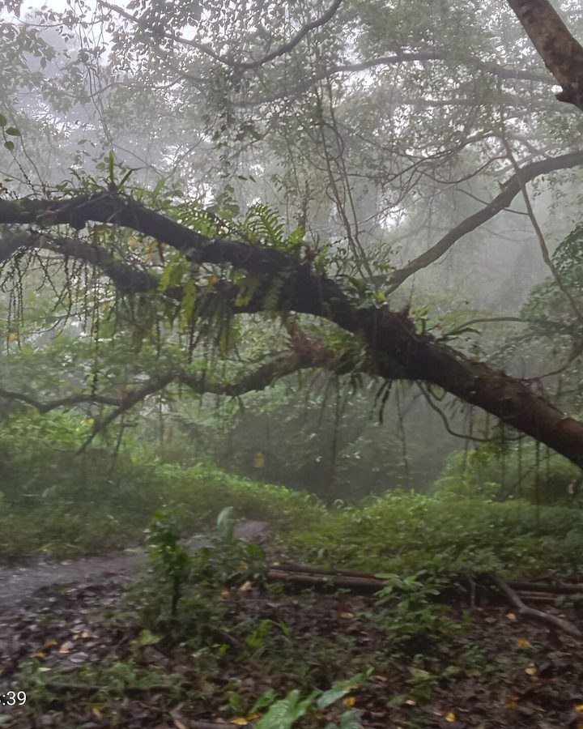
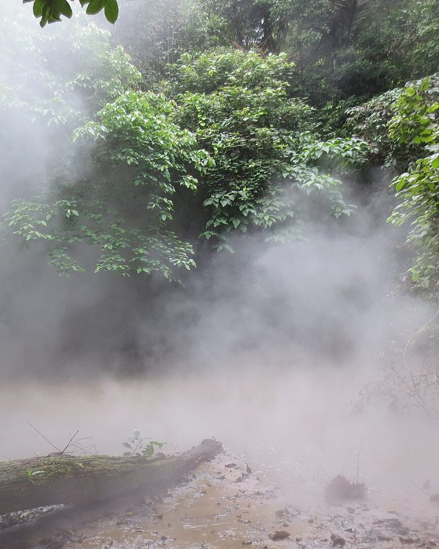
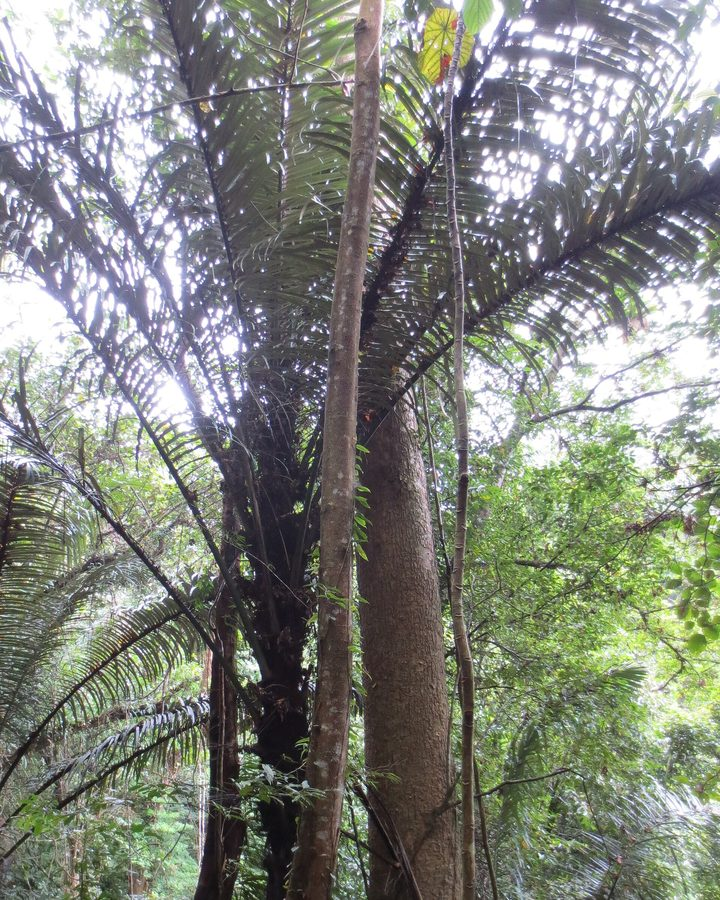
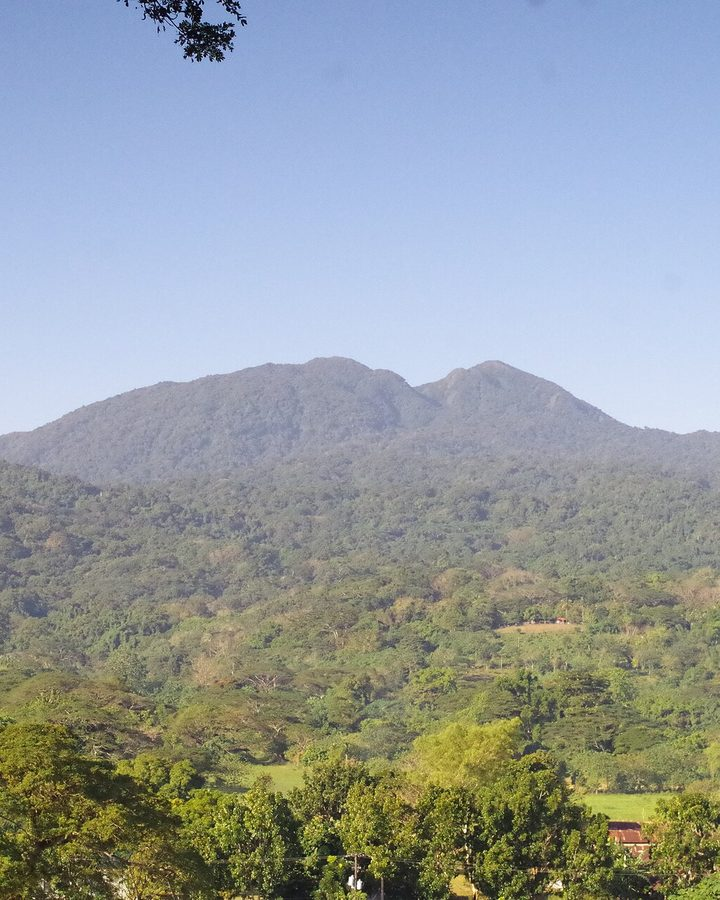
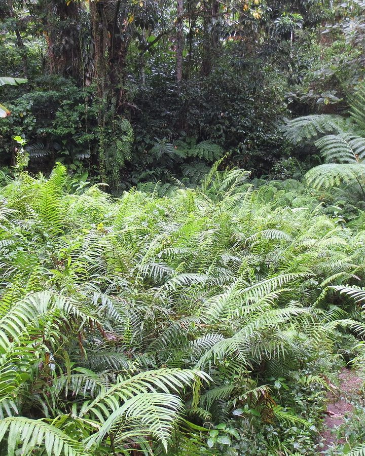
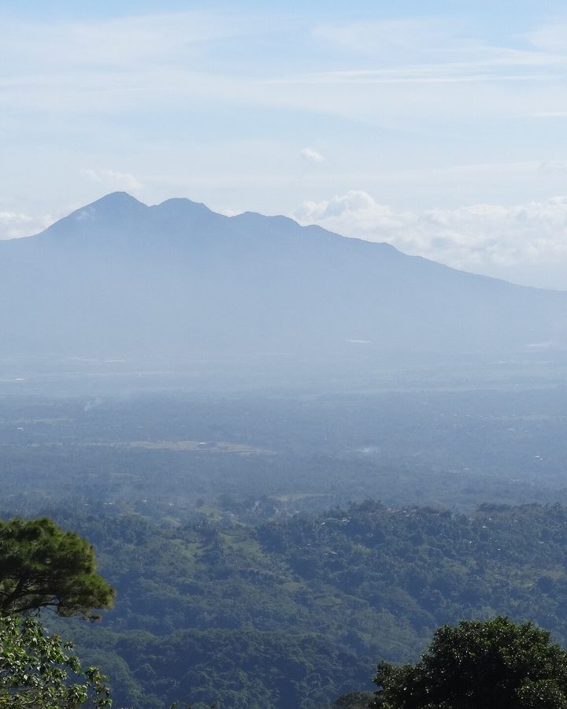

Hike Makiling safer with PeakPath
PeakPath is the hiking companion for Mount Makiling. See the trails on a map, share your live location with your group, get weather and trail advisories, and send an SOS when you need help, while park rangers and guides watch over every hike.
How to install
- Tap Download for Android App and open Peakpath.apk when it finishes. (This works on Android phones only; on a computer or iPhone, scan the QR code with an Android phone.)
- If asked, allow your browser to install unknown apps (Settings → Apps → your browser → Install unknown apps).
- Tap Install. Already have PeakPath? This updates it and keeps your account.
Discover Mount Makiling
Peaks, mossy forest, mud springs and giant ferns: a few of the views waiting on the trail.







Everything you need on the trail
Made for hikers of Mount Makiling and the rangers, guides and admins who keep them safe.
Trail maps
Every trail drawn on satellite imagery, with stations, campsites, rivers, jump-off points and Peaks 2 and 3.
Start Hike tracking
Start your hike and PeakPath follows your progress, distance and time, and tells you when you stray from the trail.
Live location sharing
See your teammates on the map in real time, so no one in your group gets left behind.
SOS & Lost / Missing alerts
One tap sends your location to the monitoring team. Companions can report a missing hiker, and every hiker on the mountain is alerted.
Hazard reports
Report landslides, fallen trees or flooded crossings with a photo; verified hazards appear on everyone's map.
Weather & advisories
Summit weather and trail advisories from the park office, pushed to your phone when conditions change.
Fees & trail details
Entrance and guide fees, an estimate for your group, distance, difficulty and each trail's stations before you go.
Accredited guides
Guides from UPLB MCME and City ENRO lead the climb and appear on the rangers' map, so help is always nearby.
Teams & group chat
Hike as a team, chat with your group and keep everyone's emergency contact in one place.
Trails on Mount Makiling
The main routes up the mountain, mapped in PeakPath. Always check the trail's status in the app before you go.
Mariang Makiling Trail
From the MCME office in Los Baños, up the concrete road to Agila Base and through the forest to Peak 2.
Sipit Trail
The Sto. Tomas, Batangas route, from the Sto. Tomas City Eco Park through Melkas Ridge to the summit.
Makiling Traverse
Up the Sipit Trail from Sto. Tomas and down the Mariang Makiling Trail to Los Baños, crossing the summit.
How it works
From your phone to the summit in four steps.
Get the app
Scan the QR code above with your Android phone, install PeakPath, then sign up with your phone number.
Pick a trail
Check its status, fees, weather and advisories, and join your team.
Register & start
Log in at the jump-off with your guide, then tap Start Hike.
Hike, share, stay safe
Follow the map, keep your location on, and use SOS if anything goes wrong.
Hiking guidelines & tips
Makiling is a humid, muddy rainforest mountain. Here is how to prepare, what to pack and how to stay safe from the jump-off to the peak and back.
- Check the trail status
Open PeakPath the night before and again in the morning. Trails close after heavy rain or when a storm signal is up.
- Read the weather
Expect rain even in the dry season. Don't go up during a rainfall warning or a tropical cyclone signal.
- Book your guide early
Arrange an accredited guide and check the entrance and guide fees for your group in the app.
- Pick a trail that fits
Choose for your group's slowest hiker. Mariang Makiling is long; Sipit is steep with roped parts.
- Sleep and eat well
Get a full night's rest and have a proper breakfast. Hiking hungry or tired leads to slips.
- Tell someone your plan
Share your trail, group and expected return time, and add an emergency contact in PeakPath.
What to bring
Essentials
- Water, 2–3 litres
- Trail food and energy snacks
- Rain jacket or poncho
- Headlamp or flashlight
- First-aid kit and personal meds
- Charged phone and power bank
- Valid ID and cash for fees
- Whistle
Comfort & the forest
- Shoes with a good grip
- Long or leech socks
- Insect repellent, salt or alcohol for leeches
- Spare shirt in a dry bag
- Small towel
- Trash bag to pack out
- Stay on the marked trail
Keep your guide in sight. Shortcuts erode the slope and are how hikers get lost.
- Walk at a talking pace
If you can't hold a conversation, slow down. Take short, frequent rests instead of long stops.
- Drink before you're thirsty
Sip every 15–20 minutes. The humid forest makes you sweat more than you notice.
- Mind your footing
Roots, mud and wet rocks are slippery. On Sipit's roped sections, go one at a time.
- Check for limatik
Look for forest leeches at each station. Use salt or alcohol so they drop off; don't pull them.
- Give way uphill
Let hikers going up pass first, and step to the safe side on narrow parts of the trail.
- Guard your battery
Keep location sharing on, dim your screen and top up from your power bank before 20%.
- Respect the cut-off
Agree on a turnaround time. Not at the peak by then? Head down; it will still be there.
- Pack it in, pack it out
Every wrapper, bottle and fruit peel goes back down with you.
- Take only photos
Don't pick plants, carve trees or take rocks. Makiling is a protected forest reserve.
- Leave wildlife wild
Don't feed, chase or touch animals. Watch them from a distance.
- No fires, no smoking
One spark can start a forest fire. Leave cigarettes and lighters at home.
- Keep it quiet
Skip the speakers. Let everyone hear the birds, the wind and the forest.
- Respect closed areas
Stay out of fenced or closed zones, including around the mud spring.
- Lost? STOP
Stop, Think, Observe, Plan. Stay where you are; a hiker who isn't moving is easier to find.
- Send an SOS
One tap in PeakPath sends your location to the monitoring team and rangers.
- Report a missing companion
Use the Lost / Missing alert right away, so every hiker on the mountain can help look.
- Three whistle blasts
Three short blasts, repeated, is the universal call for help. It carries further than shouting.
- Lightning or heavy rain
Get off exposed ridges and peaks, stay away from lone tall trees and never cross a rising stream.
- If someone is hurt
Stop, keep them warm and dry, don't move them if it's serious, and alert your guide and the rangers.
- A guide is required
Guide and entrance fees depend on the trail and your group's size: check Fees & Payments in the app for your total.
- Register and log out
Sign in at the jump-off station before you start and log out when you come down.
- Morning cut-off
Rangers enforce a morning cut-off for going to the peak, so start early.
- Keep location on
Bring water, rain gear and a charged phone, and keep location sharing on the whole hike.
- Follow your guide
Stay on the marked trail and follow your guide's instructions at all times.
- Leave no trace
Bring all your trash back down with you.